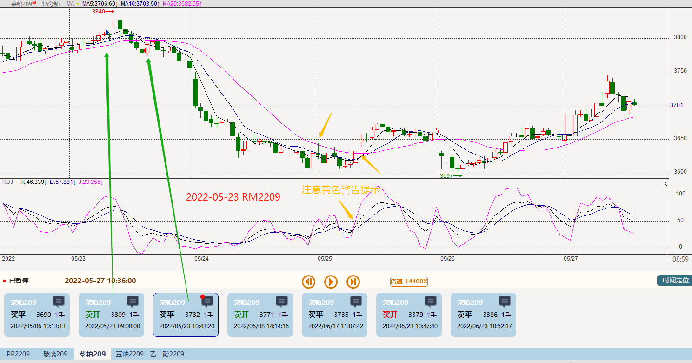
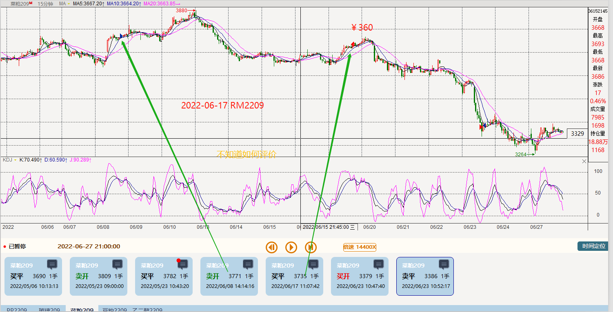
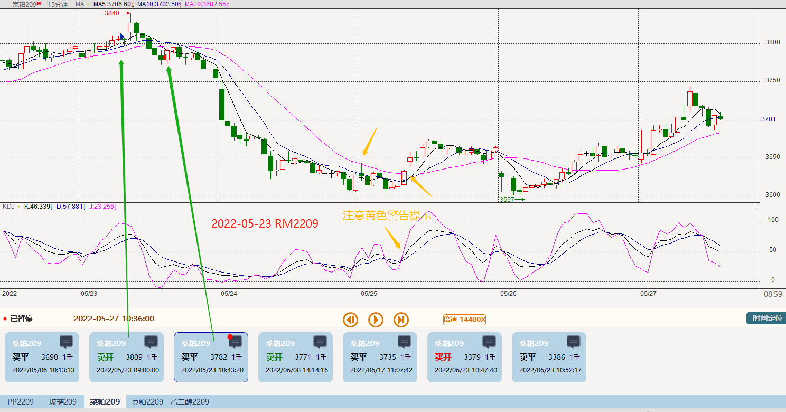
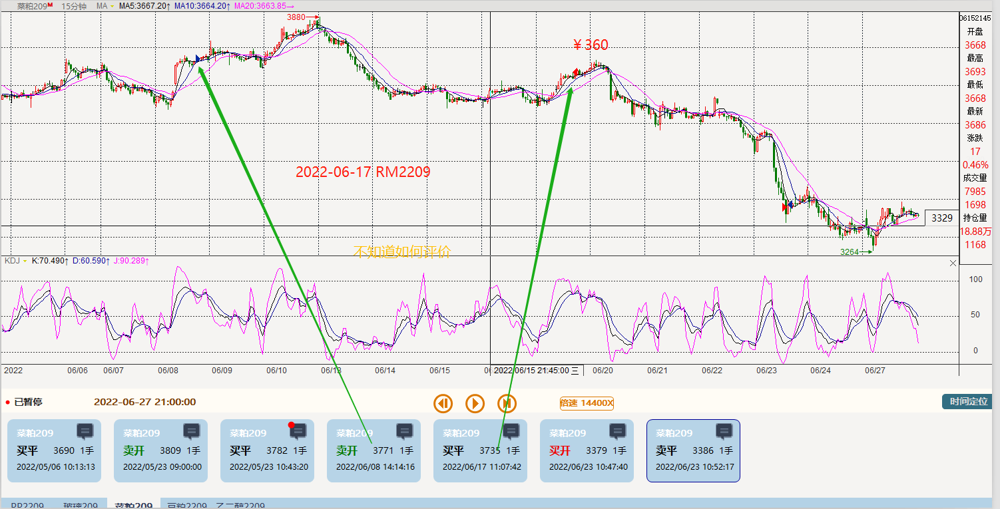

因五一有假期，中间停市，上次计算至2022-05-09，这次从05-09开始计算 于2022-06-27
期间大致盈利8K,主要涉及到品种合约为：pp2209、菜粕rm2209、豆粕m2209、玻璃FG2209、乙二醇eg2209 ，只记录大于100，
筛选条件20220505-20220627，详细统计如下
聚丙烯pp2209 : 130+160+545+315 = 1150
菜粕rm2209 : 270+360 = 630
豆粕m2209 : 620+490+720+170+430 = 2430
玻璃FG2209 : 140+260+480+380-580+220+520+300+860 = 2580
乙二醇eg2209 : 270 = 270
合计： 1150 + 630 +2430 + 2580 + 270 = 7060 ≈ 8000
筛选条件20220505-20220627，详细统计如下
聚丙烯pp2209 : 130+160+545+315 = 1150
菜粕rm2209 : 270+360 = 630
豆粕m2209 : 620+490+720+170+430 = 2430
玻璃FG2209 : 140+260+480+380-580+220+520+300+860 = 2580
乙二醇eg2209 : 270 = 270
合计： 1150 + 630 +2430 + 2580 + 270 = 7060 ≈ 8000
没想到的是这段时间，赢利最多的品种是玻璃，惭愧记得好几次在这个品种上逆势加仓；豆粕记得操作几次应该是值得学习，数据漂亮；PP是一个值得长期操作的品种。
进场后在进场的点位附近来来回回，反复震荡，按《幽灵的礼物》中的说法，进场点位不行。慢慢练习，最起码有参考了。
聚丙烯pp2209 至2022-05-29: 130+160+545+315 = 1150


豆粕m2209 : 620+490+720+170+430 = 2430
玻璃FG2209 至2022-06-06: 140+260+480+380-580+220+520+300+860 = 2580


菜粕rm2209 : 270+360 = 630
 
 
乙二醇eg2209 20220519 : 270 = 270